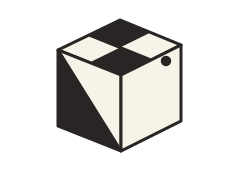
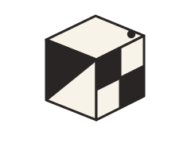

Kandidat target WU sumber 147–148
Trace visual sebelum dipasang ke staging atau database.

147 · web 11

148 · web 12
Belum ada answer key. Validasi rotasi dilakukan setelah seluruh visual dan enam sisi master disetujui.